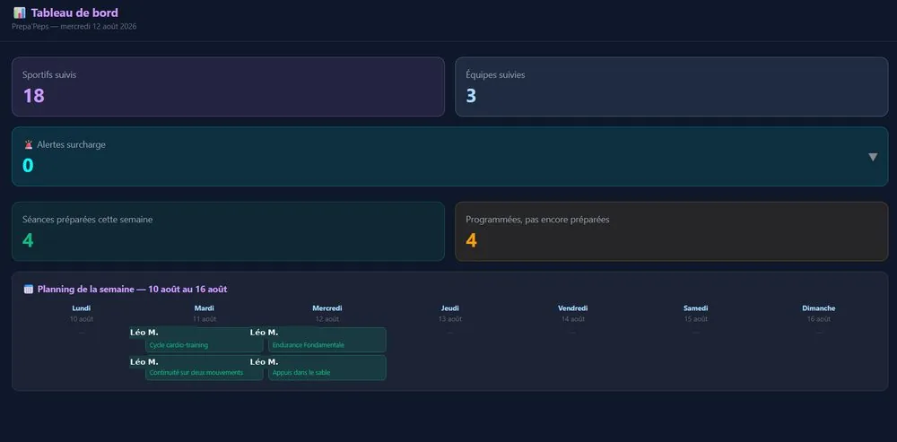

Le suivi humain, indispensable
Au-delà des chiffres, un appel au minimum hebdomadaire — pour ajuster, écouter et rester connecté à ce qui ne se lit pas dans un graphique.
Peu importe ton profil, un suivi précis est mis en place — du plus simple au plus poussé. 100 % adaptable, via notre application dédiée et/ou transférable directement sur ton calendrier personnel (Outlook, iCalendar…).
Un tableau de bord détaillé pour les uns, un échange simple et direct pour les autres — la même attention derrière, seulement présentée différemment.
D’abord, l’essentiel
Au-delà des chiffres, un appel au minimum hebdomadaire — pour ajuster, écouter et rester connecté à ce qui ne se lit pas dans un graphique.
Un balayage régulier des dernières publications scientifiques sur tout ce qui touche à notre système de programmation — réalisé avec l’appui de l’IA, via Claude et Consensus.
Et concrètement
Un outil développé sur mesure, qui centralise la programmation, la charge, le profil physique et le suivi de chaque personne accompagnée.

Séances programmées, charge cible et détail de chaque contenu d’entraînement.
Ratio ACWR, monotonie et contrainte pour piloter finement la charge dans le temps.
Un profil neuromusculaire individualisé pour cibler précisément le travail de force ou de vitesse.
Une planification à long terme de la saison, mésocycle par mésocycle et microcycle par microcycle.
Un historique des douleurs et gênes signalées pour adapter la charge avec prudence, sans jamais se substituer à un avis médical.
Pour les sports collectifs : gestion de l’équipe, de l’effectif et des postes, en plus du suivi individuel.
Capture anonymisée à titre d’illustration — noms, club et données personnelles fictifs.